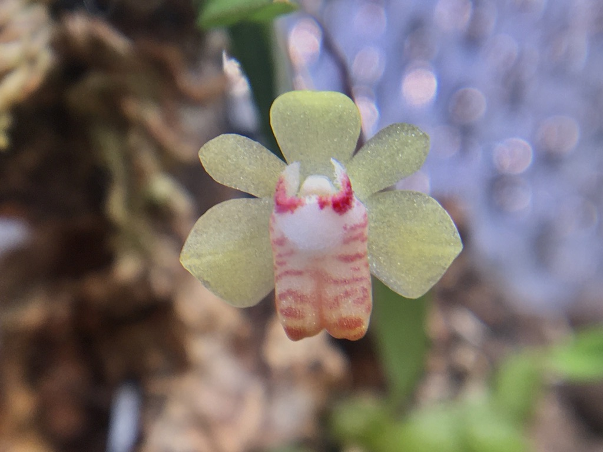
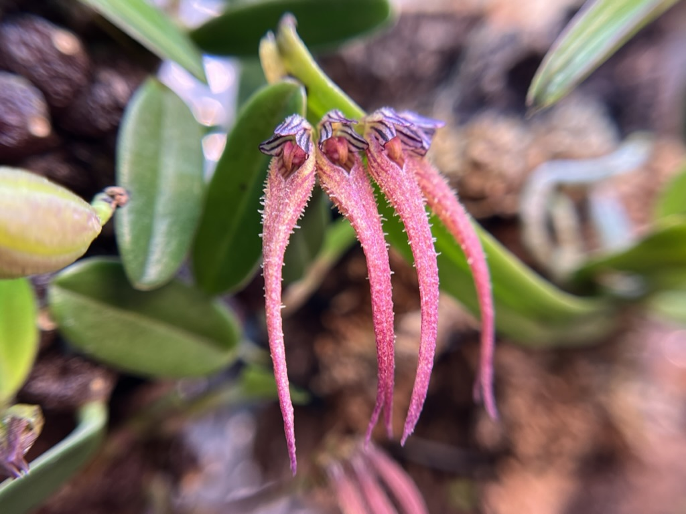
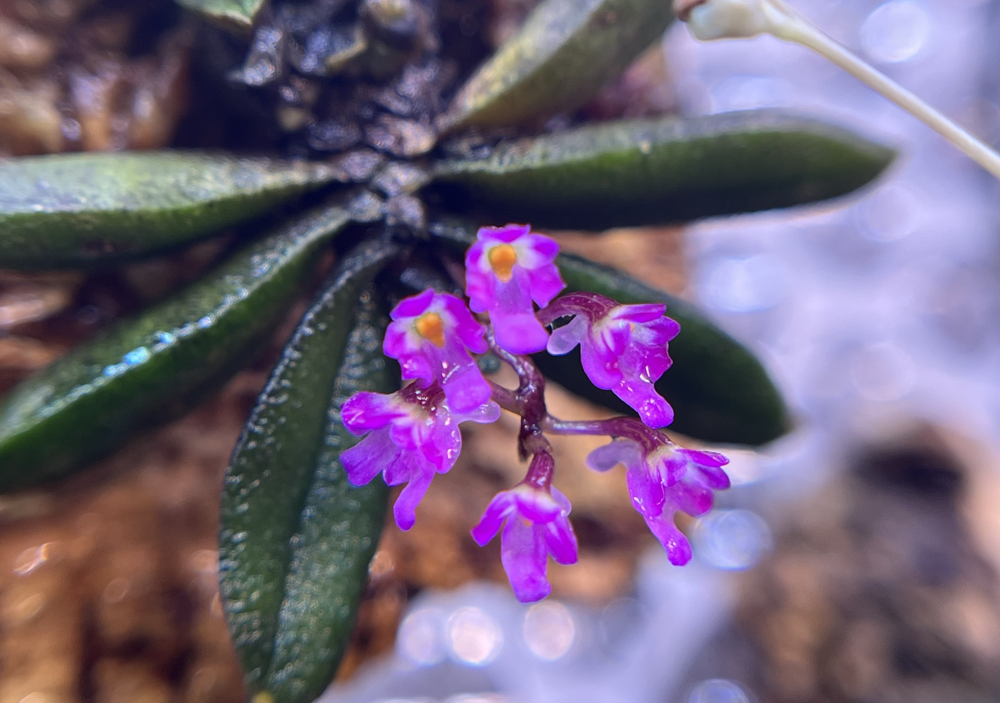
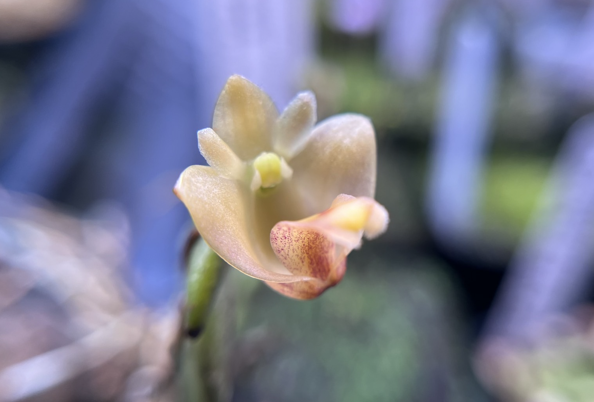

When I first received this Taiwanese white-spotted orchid, it had only two leaves. I mounted it on Portuguese cork with sphagnum moss to encourage rooting and hung it on the lower part of the grid panel, slightly away from the misting area. After five weeks, it produced three new leaves and flowered. The relatively deep flower colour may be influenced by both genetics and the lighting conditions.
This Bulbophyllum was a complimentary plant given by the seller when I purchased some Utricularia. I did not use any growing medium; instead, the plant was directly mounted on Portuguese cork using horticultural wire. Under conditions of high humidity, good air circulation, and relatively strong light, the plant flowered within just two weeks. Based on the floral morphology and coloration, it was identified as Bulbophyllum farreri.


This is a specimen of Schoenorchis texieri. Due to relatively strong light and individual variation, the flowers display a deeper purple tone. The plant already had an inflorescence when it was purchased, but possibly because of its small size or the change in environment, only a single spike opened initially, as shown in the photo. About two weeks later, the plant flowered again and produced more spikes.
This is a Schoenorchis. It was previously mounted on a solid, non-breathable wooden block, which left the plant in rather poor condition. After I remounted it on breathable Portuguese cork, it quickly started producing new roots under proper conditions. Once the roots had established around the mount, it produced its first bloom.


This is the panoramic view of my greenhouse. The orchids mentioned earlier are all placed on the grid panel mounted on the wall in this picture. This position provides good air circulation and prevents water from accumulating around the roots.
The water trays below are used for growing Utricularia. So far, I have collected no fewer than 20 species, including terrestrial, aquatic, and epiphytic groups. Among them, at least 13 species have already flowered and been recorded. This suggests that the environment I built is quite suitable for growing Utricularia.
If you would like to learn more about my collection or greenhouse setup, please leave your email at the bottom of the Home page, or feel free to contact me directly by email.